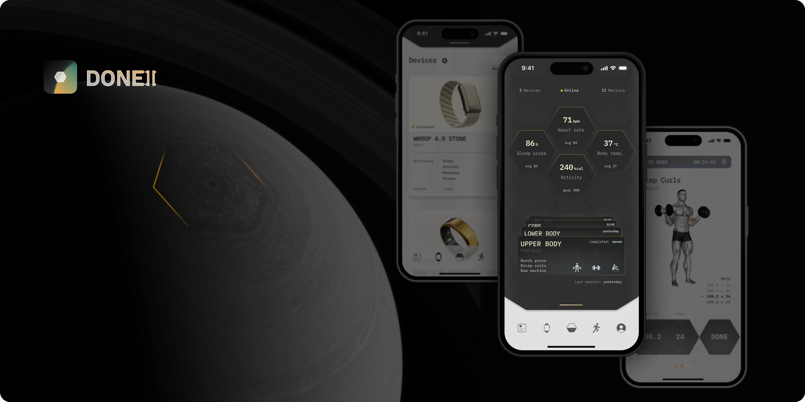
DONE ][ is based on my previous fitness app venture ”DONE WORKOUTS”.
The health & fitness space has evolved quite a bit since my work on DONE, with an extraordinary assortment of fitness trackers, as well as amazing technological advancements from AR to AI. The amount of data we can get from our fingers and wrists has tremendous potential — dramatically changing the possibilities of what a workout app can, and should do.
Having added a few extra trackers to my workouts and daily life in recent times, I was curious on how Done could have looked should it focus more on wearables, and on-device smarts. So I gave myself a 5-day deadline and decided to do a bit of exploratory work. There was no client, and no devs so the only constraint is that the version be “complete” and could ship to users (which forced me to work out an onboarding and similar details).
Product Designer
Q2 2024
- Market
- /B2C
Health & Fitness - platform
- Native iOS
- location
- Lisbon, Portugal
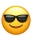
Naturally there was plenty of insight and knowledge that I had from Done. And being a dry run, I was happy to embrace the freedom, shifting my focus into the areas I’m often less likely to explore. Like, UI that’d be too expensive to code.
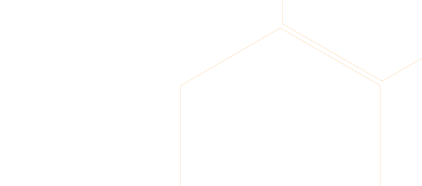
5 day schedule
- Ideas dump
- Idea selection
- Define the UX (all flows)
- Develop the UI (based on the UX)
- Finalize screens and make proto
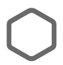
/
I had this initial insight for a home or dashboard, that would display the most important metrics — and could be customized by the user, which meant it needed to be flexible to the number of metrics it’d display.
This took me to the flexibility champ: The Hexagon.
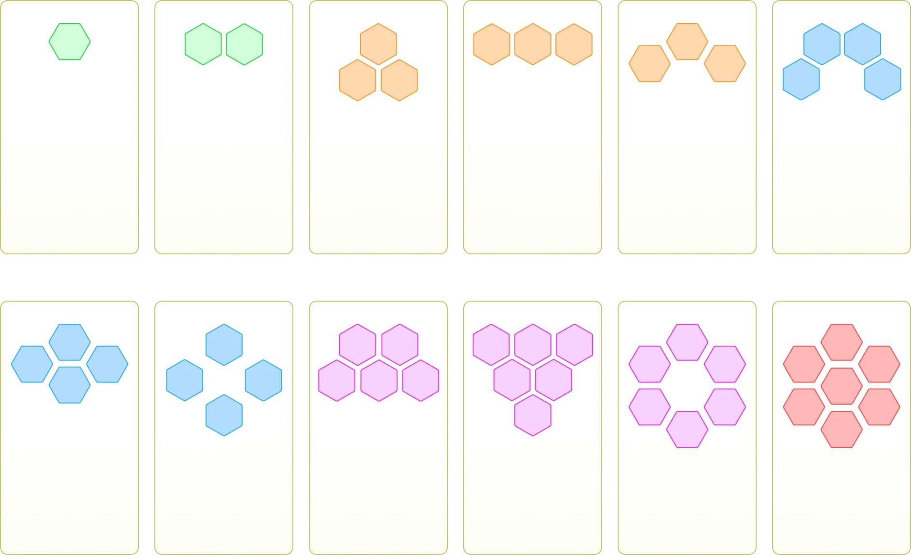
Big fan of the hexagon.
/the hood
I wanted home/dashboard to stand as a defining feature. As I was developing the UI, I had this idea of “looking under the hood” to see the inner workings of the car.
This led me to the “hood” metaphor, turning the view into a full screen drawer that the user could “flip open”, revealing the apps’ inner workings underneath.
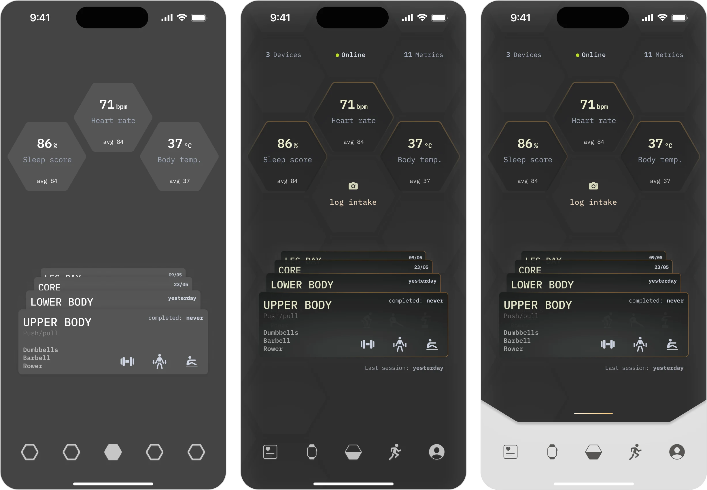
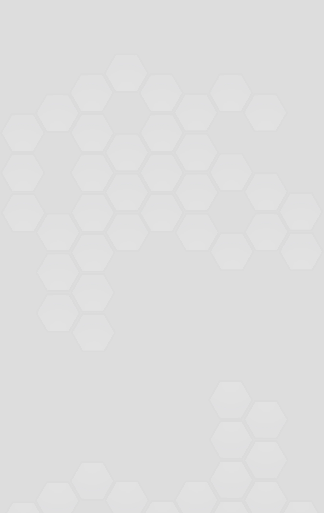
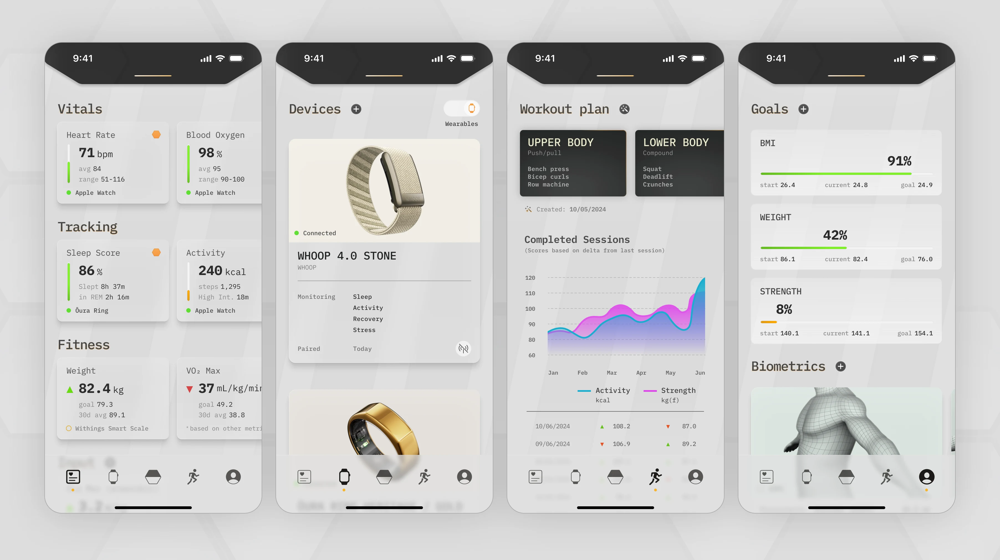
Once “the hood” set the tone in terms of UI, the remainder screens were fairly straightforward.
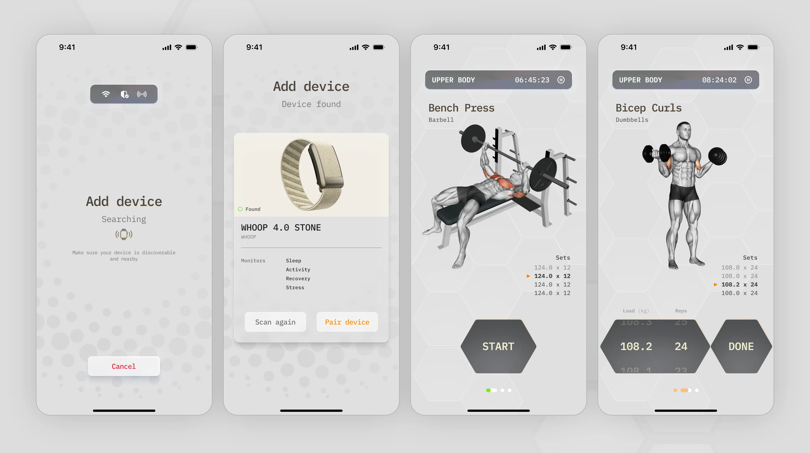
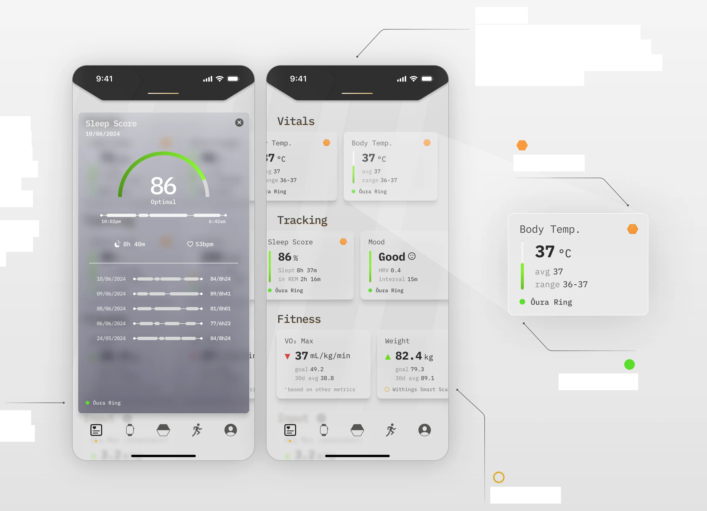
Details are fun.
As a lot of these metrics came from devices that had their own apps and interfaces — I wanted to balance the app’s own design language that I was developing, but keep familiar cues from the device maker’s app as well.
This ensured the user would feel right at home consuming the information, either here or in the native app.
Source
As many devices can read the same metrics, it’s important to show which one is the primary source.
Hood metrics
Visible tip
The lip of the hood can be pulled from the top. Due to ergonomics, it can also be triggered from the center button on the navbar.
Device offline
Metric’s source
With the foundation set, I started on the secondary flows.
Full body scan and the reason to have friends (or a tripod)
This is a flow that would had given a lot of trouble, if I was trying to actually make it work flawlessly, and handover to engineering. There’s naturally a lto of things to consider with such interaction — the fact that the camera “floats” in front of the user as they keep their arms wide and in frame. But this is happy path all day every day, so the scan was successful, with a perfect bicep and forearm perimeter reading.
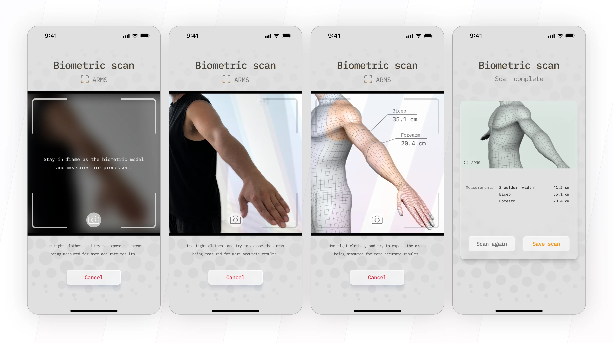
Onboarding and done.
As the 5 day deadline approached, I was making good progress, and figured I could still have a go at onboarding — part of my goal was a “complete” app, and it wouldn’t be done without the front door.
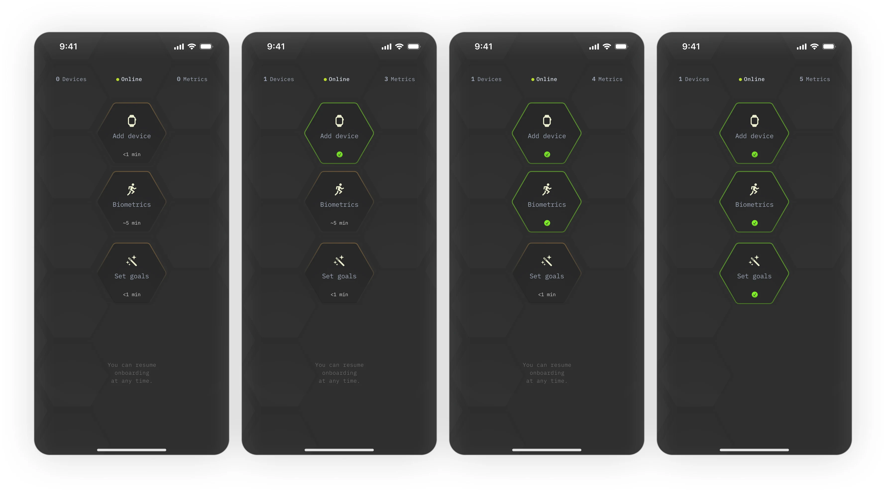
On brand onboarding
From the very start, I went all in on hexagon. And to have it work as well as it did on the last thing I worked on, was really satisfying. There was really only one constraint I set myself with on onboarding, and it’s that it could be modular and be done in any order the user decided — there were 3 main pillars for the app to be useful, and that would be a minimum of data coming in (which requires at least one device paired), a loose sense of the user’s fitness level, and one or multiple goals so it could generate an initial workout.
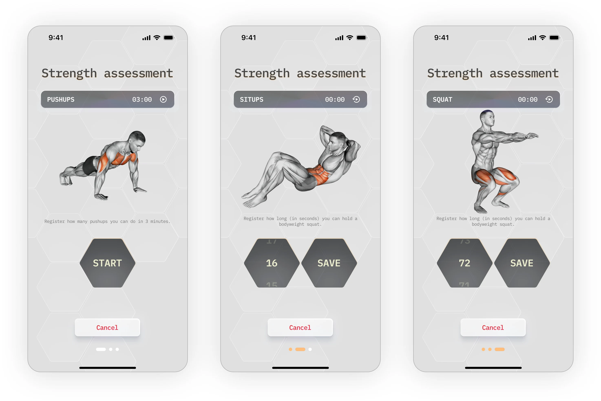
Strength assessment
A pet peeve I had with the original DONE (the one that had to actually ship) was that we didn’t solve the strength assessment — we simply asked the user to pick a level from a dropdown. The problem with the user self-assessing is that your fitness “level” is outrageously subjective.
It’s super interesting (and quite crazy) but the higher level of fitness a person has, the lower they tend to rate themselves, because as their level rises, so does their awareness (and sometimes their ambitions as well). So an average non-athlete, that simply isn’t sick or injured, might feel like that’s an indicator of good fitness. Whilst a an actual athlete will be much more attuned with their fitness, but have the potential to measure themselves against...elite level athletes, and rate their our fitness as “average”.
With these 3 very simple and easy to do exercises, we can get a much closer feel for the user’s real level. In 3 minutes, the difference in push up total, by a non-athlete and someone in real good physical shape, is staggering. Same for crunches. And the max. squat time, will really widen the gap.
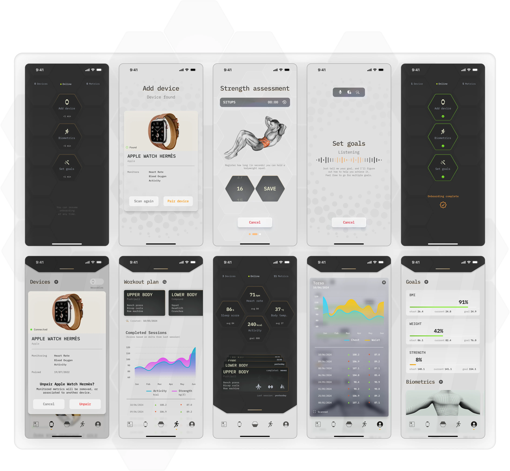
It actually took me six days.